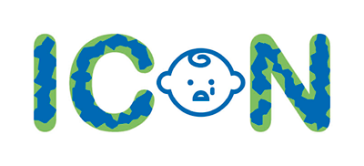

Maternity services play a crucial role with regards to safeguarding and the Think Family agenda. From work with the maternity transformation programme, NHS Safeguarding has created a National Maternity Safeguarding Network. This network provides system leadership and oversight on maternity safeguarding issues through a contextual safeguarding lens.
Young babies are particularly vulnerable to abuse, and work carried out in the antenatal period can help minimise any potential harm if there is early assessment, intervention and support. Unlike many safeguarding situations, the antenatal period gives a window of opportunity for practitioners and families to work together to:
When risks have been identified, it is important that the team around the family work together to provide appropriate interventions and planning at the earliest opportunity to optimise the outcomes and support for the child and their family.
Non accidental injury is the leading cause of major trauma in young babies. Abusive head trauma is part of this, and the peak age at which it happens is around six to eight weeks old, which corresponds to the age at which children cry most persistently.
The accumulated stressors associated with the pandemic combined with prolonged isolation at home are predicted to cause a marked increase in the risk of abusive head trauma to infants within the next few weeks. The perpetrator is most likely to be a parent and is more commonly male.
‘ICON : babies cry, you can cope' is an intervention that helps young families and is endorsed by the Royal College of General Practice, Royal College of Paediatrics and Child Health and National Children’s Major Trauma Network. During the pandemic, recognising the impact national and local lockdowns could have on new parents, the Chief Midwifery Officer wrote to all maternity and neonatal units to ask them to roll out part of the ICON programme in order to protect young children from preventable harm through such a simple intervention.
